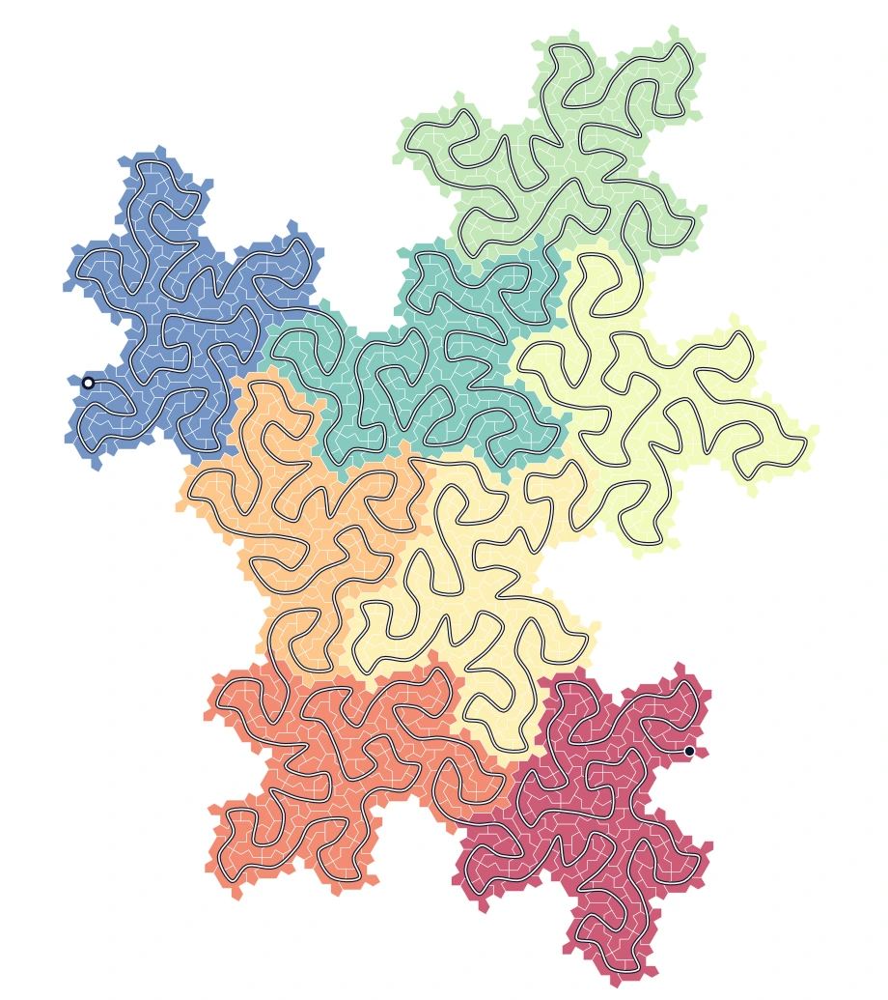
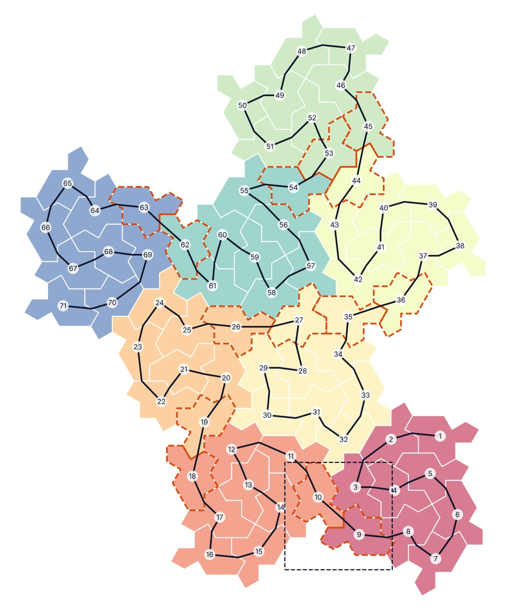
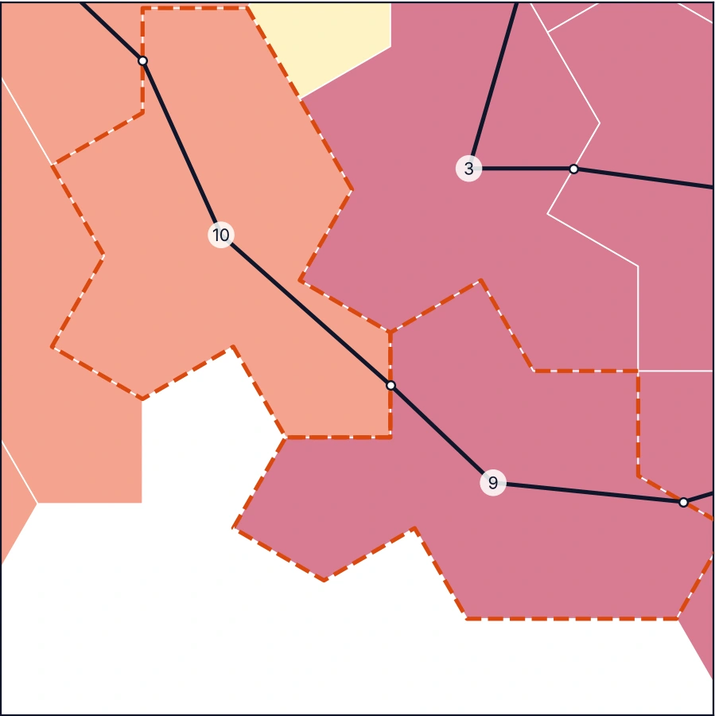
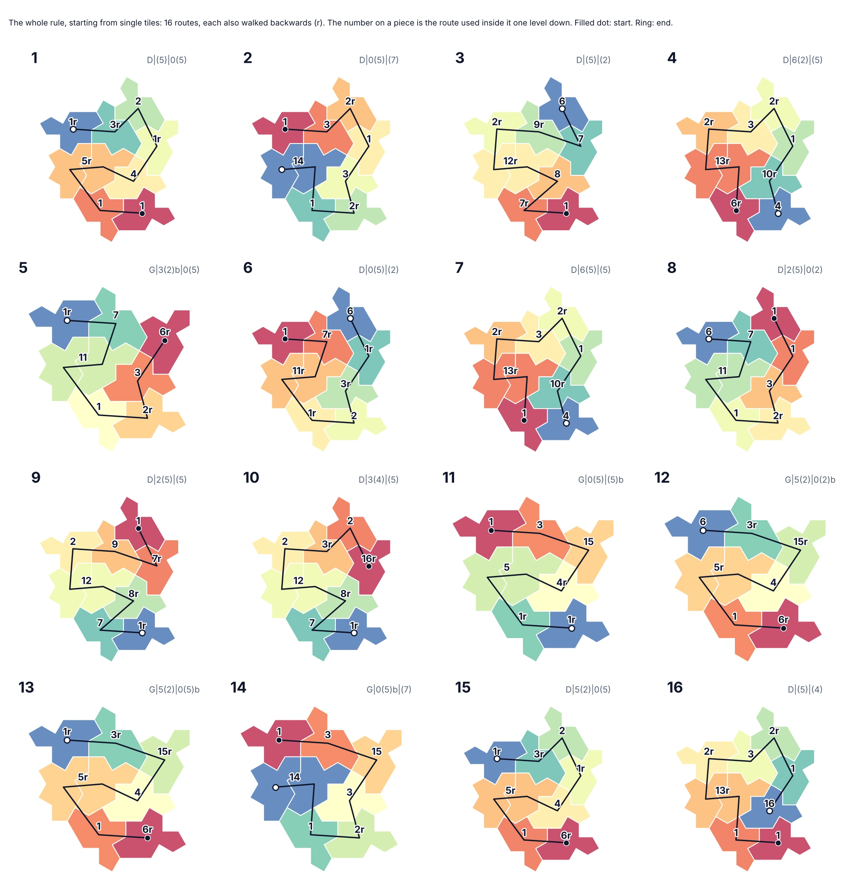
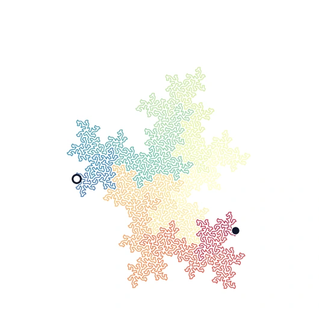
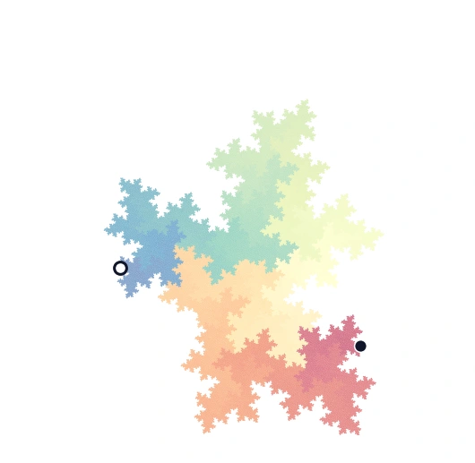

Spectre Thread
A Hilbert curve for a tiling that can never repeat
What I like about Computerphile and Numberphile is how often somebody can put a shape on a table and keep me thinking about it years later. Two of those shapes became favourites of mine. The first looks like the walls of an old European fort. You can follow the battlements around a courtyard, then around a little courtyard inside that one. The whole thing is a single line.
How much room does a line need?
Say you want to give somebody directions to anywhere on a square sheet of paper. Ordinarily you need two numbers, one for how far across and one for how far up. What if I gave you one number instead, the fraction of a journey? Walk a quarter of the way along my line and you get one place. Walk a little farther and you get somewhere nearby. Could I give you directions to every point on the sheet that way?
Four squares take one U. For sixteen, put a small U in each quarter and turn the copies until their ends meet. Try it on a point of your own.
Each time you refine the grid, you gain another piece of the address. Keep going and the little square closes in on your dot, while its interval closes in on a time to arrive there.
There’s a computer science question hiding in that picture. An image has rows and columns, but memory gives you one long sequence of addresses. Walk the image in Hilbert order and you can read a whole little square in one uninterrupted stretch. The same trick works when you want the bigger square around it.
That still strikes me as a ridiculous amount to get out of a U. You could draw the instructions on the back of a ticket. Give me a finer pen and I can keep finding smaller courtyards in the same fort. For a while this was up there with the Möbius strip among my favourite mathematical objects. Then I found the Spectre.
The wall with one kind of tile
This is a problem you can occupy yourself with while standing at a urinal. Look at the tiles on the wall. Maybe four corners meet to make a flower. Once you’ve spotted it, your eye finds the next flower, then the next. Sometimes the design is elaborate enough that it takes a while to find the piece of wall you could copy to make the rest.
I want three things from this wall. I’d like to buy one kind of tile. I’d like the tiles to fit together with no gaps. And I’d like to have something left to look for once I’ve figured out the pattern. Squares are excellent at the first two. Give me square tiles in three colours and I can make the wall as varied as I please, but now I’m making all the interesting decisions. Could the shape of the tile do that work?
Penrose got down to two shapes, kites and darts, with matching rules along their edges. In 2023 David Smith and his collaborators got down to one, the hat. There was a lovely practical catch. Some of the hats had to be turned over. Imagine discovering that halfway through a job with tiles glazed on only one face. Their follow-up, the Spectre, lets you lay the whole wall with the same face showing.
A few edges on the Spectre wall agree. Follow them out and the match breaks down. This patch lets you see one failed shift. The Spectre theorem says every nonzero shift of the whole infinite tiling fails somewhere.
The thread I wanted to make
I wanted a weave for Novus Opus, my research site. Looking at Hilbert made me want to put a pen down and work my way through an entire region in one stroke, with a recipe simple enough to use again inside every piece. Looking at the Spectre made me want to unroll as much of that weave as I liked without ever seeing the whole design start over. Could Hilbert’s line find its way through the Spectre’s wall? And if I printed only the thread, would it keep that quality?
What got me to try it was Lex Fridman’s conversation with Ankur Moitra, Steven Brunton and Alex Kontorovich. They were discussing OpenAI’s Navier–Stokes result and, among other things, an Anthropic result on 3SUM, a problem programmers meet in interviews. About twenty-four minutes in, Brunton talks about the work of finding a question whose answer you’d actually like to understand. I had one. I wanted to see the thing. So I tried a bit of what I’d call vibe mathematics. I worked with Claude to find a route, draw it and see whether we could prove it worked.

That’s the thread. There’s a set of sixteen small drawings that tells you how to make it at any scale. The part I hadn’t counted on was how much of the wall survived in the line. Draw it a particular way, erase every tile boundary, and the bends contain enough information to put the tiles back.
The Spectre gives Hilbert’s idea a foothold. The tiles gather into clusters of seven or eight pieces, and those clusters gather into larger ones. So we have something to play the part of the four quarters of a square. But each larger cluster has a slightly different outline, and you can’t simply turn one around to move the end of your route to a more convenient edge.
The catch is at the joins

The walk through 71 tiles
One crossing, enlargedSuppose you’d found a beautiful route through all nine pink tiles that ended just one tile farther down the border. And suppose you already had the orange route shown here. You’d have solved both pieces and still have no way to join them.
That pair of touching tiles is what I call a door. The search was for routes that could use the right doors at both ends. Sixteen routes turned out to be enough. Each one says which pieces to visit, in what order, and which of the sixteen routes to use inside each piece. On the first drawing, the first two pieces both say 1. To find your way through either of them, you’re already looking at the right drawing. You can read each drawing in either direction.


There’s a reason to believe this works beyond the last picture anyone has drawn. If a crossing fails in a big patch, zoom in on the two routes that were supposed to meet. There must already be a gap between the last piece of one and the first piece of the other. That gives you a smaller version of the same problem. Follow all the joins down and only 74 distinct cases turn up. Every one leads back to a case on the list, and every one works when you get down to individual tiles. A first failure would need an earlier failure.
In what sense does it fill space?
Keep the tiles the same size and give the line more paper. One of the routes contains a copy of itself in its interior, so you can fit what you’ve already drawn inside a bigger patch and keep going at both ends. Do it again and the boundary moves farther away in every direction. You get a single walk through every tile of one infinite Spectre tiling.
But look between two strokes of the pen. There’s still white paper there. Hilbert’s original question was how a line could reach every point in a square. To see that part, keep the paper the same size and make the tiles smaller.

4,401 tiles
272,791 tilesImagine stopping each drawing a quarter of the way through its tiles and putting a dot there. With each of these refinements the dot settles closer to a definite place. The same holds wherever you stop along the journey. In the limit those places trace a continuous curve through every point of a region with positive area. A quarter of the journey covers a quarter of the area. That’s the part of Hilbert’s trick I’d wanted to bring over from the square.
What happens if you erase the tiles?
I wanted to use just the thread as the texture. Here’s the detail that makes that a different question. Draw a straight pencil line across a complicated piece of wallpaper. The wallpaper might have no repeating pattern at all. The pencil line remembers practically nothing about it. Why should my thread remember any more?
For the texture I drew straight segments from each tile centre to the edge crossing and on to the next centre. Take away the tiles and you see a succession of bends. Some mark tile centres. Some are places where the pen crossed an edge and changed direction. Can you tell which is which?
The circled bend is the centre of tile 9. The next bend is the crossing into tile 10. What gives them away is the shape of a short stretch of thread. One neighbouring bend on each side can still leave an ambiguity. Take two on each side and the ambiguity disappears. Once you know the tile’s handedness and the alignment of its directions, every five-bend pattern that occurs tells you whether the middle bend is a centre. If it is, you also know which way the tile faces.
That’s enough to put the wall back together. Follow the thread, place a tile at each centre you find, and turn it the way the bends tell you. Now suppose you could slide the entire thread some distance and have it match itself exactly. You’d read off exactly the same tiles in exactly the same places. You’d have found a way to slide a Spectre tiling onto itself, which the shape of the tile rules out.
I wanted a thread I could draw without the tiles. It turns out the tiles are still in there.
Proof and credits. I posed the question and worked with Claude on the computations, certificates, software and a first draft of the paper. For the finite-level theorem, Lean checks the sixteen-route construction at every scale. The extension through a whole tiling, the continuous limit and the five-bend reconstruction have separate arguments. The work awaits independent review. Paper source and checkers (v4.5).
Related work. The Spectre and its hierarchy come from David Smith, Joseph Samuel Myers, Craig Kaplan and Chaim Goodman-Strauss. An earlier Spectre traversal by bohemian-miser visits every tile once and can re-enter a cluster. Here the walk finishes every cluster in one visit at every level. Sixteen is a sufficient number of routes. The smallest possible rule in general is open. The Spectre tiling · The earlier traversal.
Watch alongside the essay. Henry Segerman brings physical models of the Hilbert and dragon curves to Numberphile. Ayliean MacDonald builds up the tiling question in Newtyle, and Craig Kaplan tells the story of Smith’s paper tiles in the companion interview. The straight-edged drawings here use one handedness throughout. The discovery team also gives modified Spectre edges that enforce this restriction geometrically. Space-Filling Curves · A New Tile in Newtyle · Kaplan’s interview · Lex Fridman #503, with transcript.